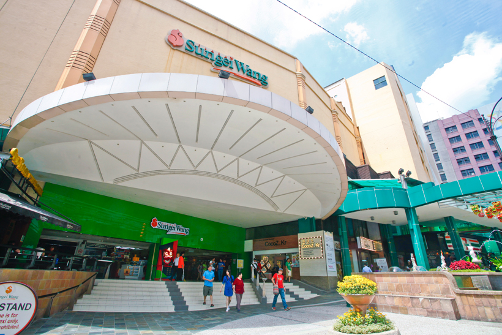

Shopping
Sungei Wang Plaza

Sungei Wang Plaza has been around for more than two decades and is one of the oldest institutions in the Bukit Bintang area. Still attracting throngs of visitors even after all these years and despite being surrounded with more glamourous competition, Sungei Wang Plaza houses more than 500 retail outlets selling everything from food to clothes, with the topmost floor dedicated to fashion for youth from a variety of home-grown labels.